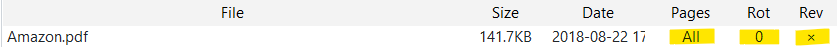
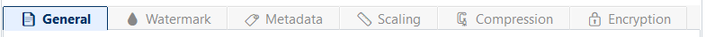

PDF Combiner – Instructions
Getting Started
Use the tabs at the top of the screen to switch between selecting files, configuring output settings, and viewing this help file.
"Merge" and "Combine" are used interchangeably throughout the application.
The file list displays files in the order they will be merged into a single PDF.
Back to Top
Adding Files to Combine
- Supported formats:
PDF, JPG, JPEG, PNG, BMP, GIF, TIF, TIFF.
- Images are converted to a single‑page PDF during the merge process.
- Duplicate entries of the same file are not allowed.
- PDF files appear in black text; image files appear in blue.
Back to Top
Main Screen Buttons
Add Files:
Opens a file browser. Select one or multiple files using standard selection controls (single‑click, Ctrl‑Click, Shift‑Click). Selected files are added to the file list.
Add Folder:
Opens a folder browser. All files in the selected folder and its subfolders are added to the list.
Remove Selected:
Removes highlighted files from the list. Note: files are NOT deleted from disk.
Move Up / Move Down:
Moves the selected file up or down in the merge order.
Clear All:
Removes all files from the list. Note: files are NOT deleted from disk.
Save List:
Saves the current file list and per‑file settings (rotation, pages, reversal) to a .pdflist file for reuse.
Load List:
Loads a previously saved .pdflist file, restoring file entries and their associated settings.
Output File / Browse:
Selects the save location and filename for the merged PDF.
Back to Top
The File List
- Files are merged in the order shown.
- You may add or remove files at any time.
- Hover over a file to view a preview and its full path.
- Click column headers (Filename, File Size, Date) to sort; click again to reverse the sort.
- Sorting resets any manual ordering.
Back to Top
Pages / Rotation / Reversal Columns

Note: Double‑click the cell in the Pages, Rotation (Rot), or Reverse (Rev) column for the file you want to modify. The cell becomes editable after double‑clicking.
Pages *
- Specifies which pages to extract:
All or blank → include all pages- Single page:
5
- Range:
1‑10
- Multiple ranges:
1‑3,5,7‑9
Rotation (Rot)
- Rotates pages by 0°, 90°, 180°, or 270° clockwise.
- 0° applies no rotation.
Reverse (Rev) *
- Reverses the page order for the file.
- '✗' = not reversed; '✓' = reversed.
* Not applicable to image files, which are always treated as single‑page documents.
Back to Top
Options / Settings

- Add a Table of Contents (TOC): Inserts a clickable TOC as the first page. Optional metadata such as creation date may be included.
- Add filename bookmarks: Creates bookmarks based on source filenames.
- Insert breaker pages: Adds labeled separator pages before each file.
- Scale all breaker pages to a uniform size: Ensures consistent breaker page dimensions. If not selected, each breaker page matches the size of the first page of its associated file.
- Ignore blank pages: Skips blank pages unless they fall within a specified page range.
- Compression/Quality: Compresses the merged PDF. Higher compression reduces file size but lowers image quality.
- Add PDF metadata: Sets Title, Author, Subject, and Keywords for the merged PDF.
- Add watermark: Applies text across all pages with adjustable opacity, size, and rotation.
- Scaling: Scales the merged PDF.
- Encryption: Adds user and/or owner passwords to secure the merged PDF.
Back to Top
Status Bar
- The bottom status bar displays the number of files and their total size.
Back to Top
Combining Considerations
- Each PDF is fully loaded into RAM; for best performance, keep individual PDFs under 100 MB.
- Merging 2–50 files is typically fast. Merging 50–100+ files depends heavily on available RAM and total output size.
- Compression, scaling, and watermarking increase CPU and RAM usage.
- Available system RAM determines maximum workable file sizes.
- Output size is limited only by disk space and memory.
- Very large merges or large numbers of files may result in slower progress updates and higher memory usage.
Back to Top